The ring size of the cyclic hemiacetal structure assumed by many monosaccharides was determined by oxidative cleavage of a permethylated derivative. Five and six-membered rings are favored over other ring sizes because of their low angle and eclipsing strain. The equations in the following diagram illustrate this approach for the aldohexose, glucose.
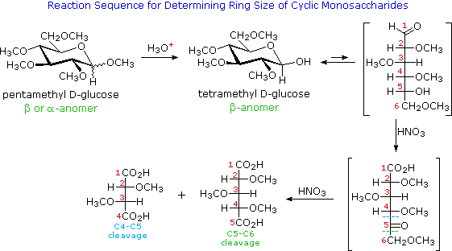
First, a pentamethyl derivative is prepared, as noted earlier. One of the methyl ether functions in this derivative is part of an acetal, and is therefore readily hydrolyzed by aqueous acid. The open chain form of this tetramethylglucose derivative is oxidized to a keto-acid intermediate by nitric acid treatment. The location of the ketone carbonyl reflects the size of the initial heterocyclic ring, C-4 for a pyranose ring and C-3 for a furanose ring. Further oxidation cleaves the carbon chain at bonds leading to the carbonyl group. This final oxidation produces a mixture of two dicarboxylic acids, differing in length by one carbon atom. Once these fragments have been identified, the location of the ketone function is established.
A simple strategy that provides easily interpreted results consists of methylating all the free hydroxyl groups in a polysaccharide, followed by hydrolysis of the glycoside bonds and determination of the methylated glucose products finally obtained. In the following diagram, the methyl groups added to an amylose chain are colored magenta. A chain of glucose units joined only by C-1 to C-4 glycoside bonds will give 2,3,6-tri-O-methylglucose as the chief product with a small amount of 2,3,4,6-tetra-O-methylglucose coming from the glucose unit on the chain's end. The shorter the average chain length, the greater is the relative amount of the tetramethyl derivative.
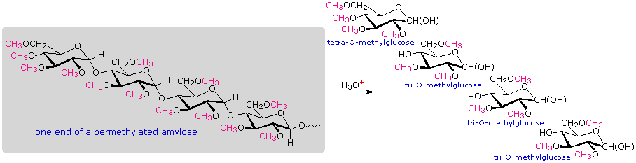
When chain branching of the kind found in amylopectin and glycogen is prevalent, 2,3-di-O-methylglucose is formed from each glucose at a branch point. The amount of this derivative formed is roughly the same as the tetramethyl derivative, and reflects the degree of chain branching. By clicking on the above diagram, a segment of permethylated amylopectin will be displayed and analyzed. The numbers presented in the diagram reflect that example. Typical results for amylopectin are 90% trimethylglucose + 5% dimethylglucose + 5% tetramethylglucose.
The equilibrium preference of most glucosides for the alpha-anomer is referred to as the anomeric effect. If we take away the extraneous functions and substituents from the glucoside structure, it is reduced to the 2-substituted pyran shown on the left in the following diagram. As the two conformational equilibria in the diagram demonstrate, the anomeric effect for a methoxy substituent is sufficient to change the preference for equatorial orientation (a consequence of steric hindrance) to a preference for the axial orientation. The anomeric effect in this case has been estimated at over 1 kcal/mol, but it should be noted that hydrogen bonding in hydroxylic solvents influences this factor.
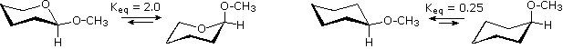
One explanation for the anomeric effect focusses on dipole interactions of the two ether functions.
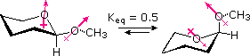
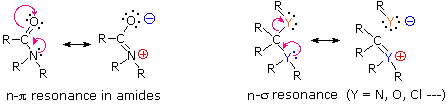
To be precise, the nonbonding electron pair, n, is actually being delocalized into the empty antibonding molecular orbital associated with the π or σ-orbitals referred to above. As the antibonding orbital becomes occupied (by electrons), the corresponding bonding orbital is weakened and its electron pair moves onto the acceptor atom. A vital factor in these interactions is the spatial requirement for overlap between adjacent orbitals. For the amide example, this stereoelectronic requirement will be illustrated by clicking on the above diagram. The lactam example on the left is a typical amide. The basicity of the nitrogen electron pair is dramatically lowered (compared with an amine), and the carbonyl stretching frequency in the infrared spectrum is likewise lowered. Although the bicyclic compound on the right has a carbonyl group adjacent to an amine, its properties are very different from the amide on the left. The rigid bridged structure prevents the nonbonding electron pair on nitrogen from overlapping with the pi- orbitals of the carbonyl group. Indeed, if such an interaction occurred, the resulting resonance contributor would violate Bredt's rule. Not only is this keto-amine more basic than an amide, it is much more reactive under base-catalyzed hydrolysis conditions than are most amides, and the carbonyl stretching frequency is even higher than that of a comparable ketone (thanks to the inductive effect of the nitrogen). A similar stereoelectronic factor influences n-σ interactions, and is presumably at the heart of the anomeric effect. The following diagram serves to illustrate this feature for the 2-methoxypyran conformations.
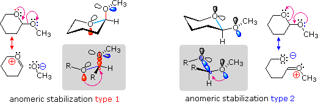
The resonance equations on the far left and far right show two kinds of n-σ interactions, colored red for the endocyclic interaction on the left, and blue for the exocyclic interaction on the right. When drawn as flat Lewis structures the stereoelectronic characteristics of these interactions are not evident, but in three-dimensional perspective drawings, such as those near the center of the top row, they emerge. Again the red bonds and orbitals define the endocyclic relationship, and the blue define the exocyclic relationship. The partial structures drawn in the gray-shaded boxes show the anti-periplanar orientation configuration required of the interacting orbitals. The axial conformer on the left has two allowed n-σ interactions (colored red and blue); whereas, the equatorial conformer on the right has only one (colored blue). Furthermore, for pyran derivatives of this kind the endocyclic (red) interaction is a permanent contributor to the axial conformer, but the exocyclic (blue) interaction is only effective for certain rotamer conformers of the methoxy group. To examine a model of the axial conformer Click Here.
The anomeric effect is also observed in acyclic systems, as the following comparison of butane and dimethoxymethane illustrates. The favored conformation changes from anti in the case of butane to gauche for the diether. The anomeric interaction in the latter compound is colored magenta.
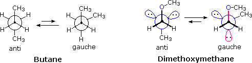
Donor and acceptor atoms other than oxygen may participate in the anomeric effect, with nitrogen being the best donor and halogen the best acceptor. Precise measurements confirm the changes in bond length expected for the anomeric effect. In the case of chloromethyl methyl ether (CH3-O-CH2-Cl), the CH2-O bond is 4% shorter than the CH3-O bond, and the C-Cl bond is 6% longer than the corresponding bond in ethyl chloride.
Many modified monosaccharides are deoxy-derivatives. In other words, one or more of the hydroxyl groups present in a normal sugar are missing. Examples of two such deoxy-sugars are given in the following diagram. In these and other formulas the anomeric carbon is colored red.
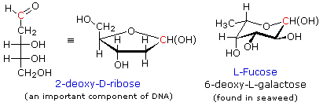
Amino sugars have an amino group, or several amino groups, replacing a customary hydroxyl group. Two examples will be displayed above by clicking on the diagram. D-Glucosamine, on the left, is probably the most common of the amino sugars. Its N-acetyl amide is the primary monosaccharide unit in the cellulose-like biopolymer that forms the exoskeletons of insects and shellfish. Finally, two examples of chain-lengthened sugars will be displayed by clicking a second time on the diagram. The structure of sialic acid, on the left, can be disconnected to reveal a glucosamine segment (colored blue) bonded to the methyl group of pyruvic acid. Further discussion of the role these saccharide derivatives play in biology is left to more specialized sources.
Ascorbic acid, or vitamin C, is an important water soluble biological reducing agent that complements lipid soluble antioxidants such as vitamin E. Most animals synthesize this vital compound from glucose by a series of four enzymatic transformations, shown in the following diagram. Unfortunately, humans and a few other animals, including guinea pigs, some monkeys and many birds, do not have the enzyme, L-gulonolactone oxidase, needed for the fourth step. These animals must consume ascorbic acid as part of their daily diet or suffer chronic deficiency effects, which in extreme cases is the disease called scurvy. Although it does not have a free carboxyl group, ascorbic acid has a pKa of 4.17 as a consequence of vinylagous activation of the C-3 hydroxyl group (red hydrogen).
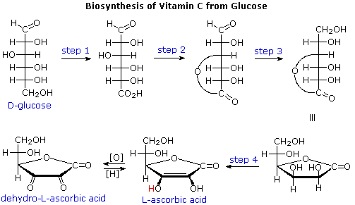
Sweetness is one of five types of taste sensed by humans. The others are saltiness, sourness, bitterness and savouriness. It is generally regarded as a pleasurable sensation, and the simple carbohydrates or sugars that contribute to it are sought after and valued. Sucrose, from sugar cane and sugar beets, is the standard sweetener used in western cuisine. A less expensive alternative known as high fructose corn syrup (HFCS) was developed in the late 1950's and is now widely used in baked goods and beverages. HFCS is made from corn syrup by enzymatic conversion of glucose to fructose. Since fructose is 2.3 times as sweet as glucose and 75% sweeter than sucrose, HFCS provides a practical substitute for sucrose in a variety of applications, and is available in compositions ranging from 45 to 90% fructose. Hydrolysis of sucrose produces an equimolar mixture of glucose and fructose,that is sweeter than sucrose itself. Since the specific rotation of these sugar solutions changes from +66.5º for pure sucrose to -22.0º for the hydrolysis mixture (fructose is strongly levorotatory), the resulting glucose fructose mixture is called invert sugar. It is widely used in food manufacture in much the same way as HFCS. An enzyme, invertase, which catalyzes the hydrolysis of sucrose in living organisms, is used in the manufacture of invert sugar. Honey is similar to invert sugar, consisting roughly of 38% fructose, 31% glucose, 9% disaccharides such as maltose and 17% water. Although there is a strong correlation between the rise of obesity in the US and the use of HFCS for sweetening beverages and foods, it is not clear whether this is a causal relationship. In fact, no substantial evidence supports the idea that high-fructose corn syrup is responsible per se for obesity. Instead, over-consumption of sugars, encouraged by the low cost of HFCS and invert sugar, is the general culprit.
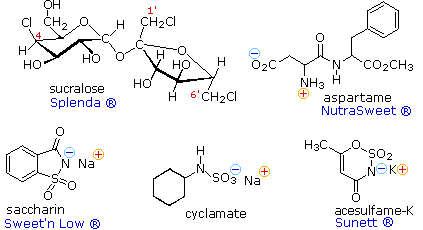
Insofar as the public is concerned, the sweet taste of sugars is undoubtedly their most important characteristic. In this respect, synthetic sweetening agents have become a multimillion dollar business, thanks to the national preoccupation with weight control. The structural formulas for five compounds of this kind are shown on the right, together with some of the commercial names under which they are sold. Saccharin was discovered in 1879 at Johns Hopkins University, and is the oldest member of this group. Sucralose is the newest sweetener, with FDA approval being issued in 1999. Because the synthetic sweeteners are many times sweeter than sucrose, only small amounts are needed to achieve a desired effect. Also, most are not significantly metabolized, so their use does not introduce additional calories into a diet. For some individuals, however, taste overtones such as bitterness reduce the suitability of these agents as sugar substitutes. If the sweetness of sucrose is taken as a standard, then these and other sweetening agents may be ranked accordingly, as listed below.
Compound
sucralose
saccharin
acesulfame-K
aspartame
cyclamate
fructose
sucrose
glucose
maltose
lactose
Sweetness
Aspartame is a dipeptide composed of two natural amino acids, phenylalanine and aspartic acid, neither of which is sweet. Each of these components has a stereogenic center, so four stereoisomers are possible. The natural configuration of these amino acids is 2S, and (S,S)-Aspartame is the commercial sweetener. The other three stereoisomers are not sweet, and one is bitter. Aspartame undergoes a slow intramolecular acylation to a cyclic dilactam that is not sweet. Consequently, soft drinks and other beverages that contain dissolved aspertame have a limited shelf life. This slow reaction is accelerated by heat, so aspertame is not suitable for cooking purposes. To see an equation outlining the intramolecular acylation click on the above diagram. Acesulfame, cyclamate and saccharin are achiral, and are generally suitable for cooking Since these compounds are acidic, their water soluble sodium or potassium salts are the commonly used form. Sucralose has many stereogenic centers, and although other chloro derivatives of sucrose are also sweet, only the designated stereoisomer has been approved as a food additive.
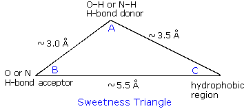
For sweetness to be perceived, molecules of a substance must activate receptor sites in taste bud proteins on the tongue. This activation is believed to occur when a molecule of suitable shape has a characteristic functional distribution, referred to as the A, B, C system. According to present theory, there are three essential components to a sweetener molecule, oriented in a triangular fashion, as shown on the right. The A(H) and B regions encompass functions of higher electronegativity, and the distance between them must be greater than 2.4 A and less than 4.0 A. If the distance between the atoms are not in this range then the substance becomes bitter. The third part of this triangle, C, represents a hydrophobic and lipophilic region of the molecule, not a specific atom or group. This region does not bind to the receptor site. When a sweetener molecule binds to a receptor, the AH region of the sweetener hydrogen bonds to the B region of a receptor site, and the B region of a sweetener hydrogen bonds to the AH region of the receptor site. This triggers a response by cells in the taste bud, such that electrical impulses to the brain create the perception of sweetness. Acesulfame, saccharin and cyclamate are partially protonated by saliva, generating the A(H) moiety. The adjacent SO2 group serves as the B region in the first two cases. Similarly, the zwitterionic aspartic acid segment of aspertame provides the A(H) and B sites for that sweetener. Sucralose and natural sugars are not as easily analyzed, but more advanced molecular orbital calculations have identified essential features in these compounds. To examine molecular models of these sweetening agents Click Here.
Before any food additives, including synthetic sweeteners, become available for general use, they must be evaluated and approved by the FDA (Food & Drug Administration). .First, the immediate or acute toxicity of a substance is established by animal feeding studies. In this respect all the sweeteners listed above were determined to be relatively innocuous ( roughly 10 times less toxic than salt and 100 times less toxic than caffeine to rats ). It should be remembered that everything is poisonous when taken in a sufficiently high dose. Thus, quantities of 25 to 30g of caffeine in a single dose are lethal to most humans. It is a relatively simple matter to establish the acute toxicity of a substance, so most of the FDA's effort is directed to discovering chronic toxicity and carcinogenic factors associated with a given agent. Such studies are conducted in a variety of government, pharmaceutical and academic laboratories, often over a relatively long time period, and require care in the interpretation of results.
Saccharin, the oldest of the synthetic sweeteners, has been the subject of more than 3000 separate studies. In the 1970's a report of increased incidents of bladder cancer in rats fed very large amounts of saccharin led the FDA to require that a warning label, "May be hazardous to your health." be carried on products containing saccharin. Rat bladder cancer was also reported in cyclamate feeding studies, and FDA approval was withdrawn in 1970. Later reviews suggested that the increased sodium load associated with the very high doses in these studies may have been responsible for some of the bladder cancer. Consequently, the warning requirement for saccharin was lifted in 1991. Cyclamate is likely to be approved soon; over 600 studies have been conducted, and it is presently approved for use in 55 other countries. Over 700 studies of aspartame are reported. Unlike saccharin, cyclamate and acesulfame, which pass through our systems largely unmetabolized, aspartame is converted to phenylalanine aspartic acid and methanol. The first of these metabolites presents a danger to individuals having the genetic disorder PKU, which inhibits their ability to further metabolize this essential amino acid. Some concern has also been voiced concerning the methanol metabolite, but the small amounts produced in normal use are unlikely to pose a serious health issue (methanol is only 10% of aspartame). Aspartame received FDA approval in 1981. It is worth noting that there seem to be more anecdotal reports of health problems associated with aspartame than with the other sweetening agents, but this may only reflect its widespread use in soft drinks. Sucralose, the newest and least studied sweetener (ca. 70 reports), received FDA approval in 1998. Although largely unmetabolized, over 25% of ingested sucralose is believed to be retained or metabolized to dichlorofructose. Reports of thymus gland shrinkage and liver enlargement will need to be investigated before being dismissed.
Stevia is a genus of herbs and shrubs native to subtropical and tropical South America and Central America. The leaves of the plant Stevia rebaudiana Bertoni have a sweet taste resulting from glycosides of the diterpene steviol (structure on the right).
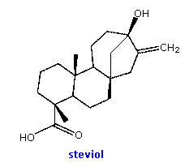
Complex oligosaccharides are common components of numerous biologically important macromolecules. In many of these systems aminosaccharides, deoxysaccharides and C9 glyconic acids are found linked to more common sugar units, so an amazing diversity of similar but distinct structures exists. In this discussion we shall limit our attention to relatively simple molecules composed of simple aldohexose units. Appreciable amounts of oligosaccharides are found in certain foods, such as peas and beans. The structural formulas of three such compounds are given in the following diagram. They are all non-reducing sugars. A common sucrose moiety is seen for the two rings on the right, and this is joined to one or more galactopyranose rings by alpha-glycoside bonds at C-6. Two enzymes are required to hydrolyze these oligosaccharides into monosaccharides that are easily absorbed into the blood stream. The galactose units are cleaved by alpha-galactosidase, and the glucose-fructose link in sucrose is hydrolyzed by sucrase (or invertase). Humans do not have a source of alpha-galactosidase in their digestive system, so the oligosaccharide passes largely unchanged into the colon. Anaerobic microorganisms in the colon ferment these sugars, producing carbon dioxide and methane, gases that cause flatulence.
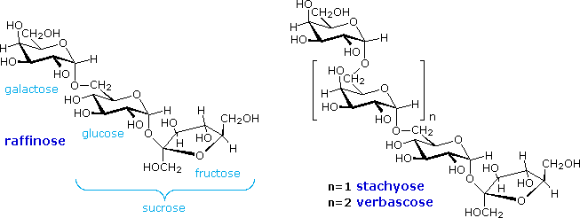
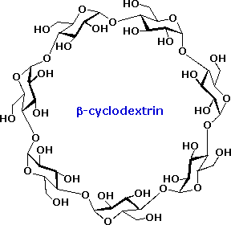
An interesting class of non-reducing oligosaccharides composed of glucopyranose rings joined 1-4 by alpha-glycosidic bonds are called cyclodextrins. Cyclodextrins are formed when starch is treated with an amylase enzyme from Bacillus macerans. Depending on the number of glucose units in the ring the cyclodextrins are named alpha (6), beta (7), and gamma (8). The shape of the cyclodextrins is that of a tapered ring, with the C-2 and C-3 hydroxyl functions on one edge and the CH2OH groups hanging from the opposite edge. The structure of the beta-isomer is shown on the right. By clicking on this structure a model of this cyclodextrin will be displayed. Because the interior of the cyclodextrin ring is relatively hydrophobic, these remarkable compounds are able to encapsulate small nonpolar molecules. They have been used as catalysts and aqueous transport agents.